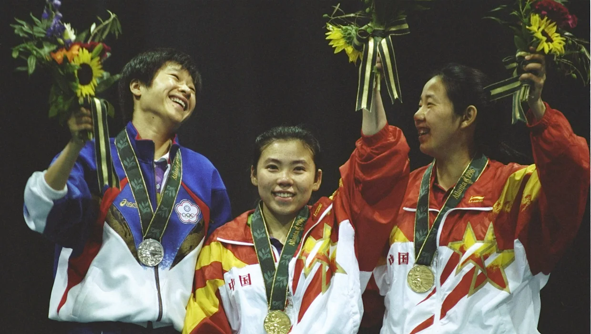

Desde Seúl 1988 hasta Río 2016, China ha ganado 53 medallas, incluidos 28 oros, 17 platas y 8 bronces en tenis de mesa.
Los mejores resultados se dieron en Atlanta 1996 (4 de oro, 3 de plata, 1 de bronce), Sídney 2000 (4 de oro, 3 de plata, 1 de bronce) y Pekín 2008 (4 de oro, 2 de plata, 2 de bronce).
Con esos espectaculares resultados está claro porque se conoce a China como la gran potencia mundial del ping pong.
